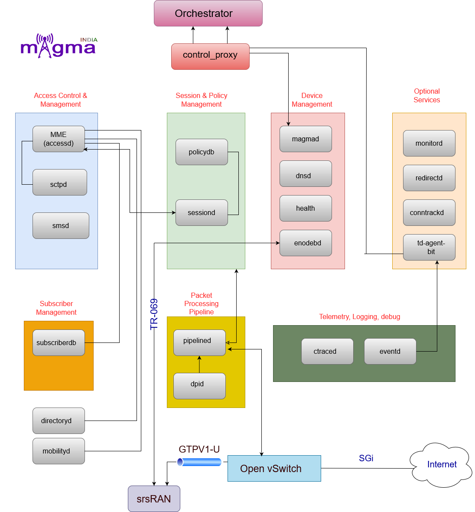

Magma Services¶
{kind=link}
About Services¶
1. SCTPd¶
sctpd service. Termination service for the SCTP connections currently used for S1-C and N2 interfaces. It decouples application layers of 3GPP control signaling from the SCTP communication. Restarts of other AGW services do not impact this service in stateless mode, hence it preserves RAN connections upon application crashes or software updates. Restart of this service forces all the other major AGW services to restart.
2. MME¶
mme service. Implements S1AP, NAS and MME subcomponents for LTE control plane. Also implements SGW and PGW control plane. If the mme service is restarted, S1 connection will be restarted and users service will be affected unless the AGW is in stateless mode. Mobilityd, pipelined, and sessiond are restarted in this process as well.
3. Enodebd¶
enodebd service. Enodebd supports management of eNodeB devices that use TR-069 as a management interface. This is an optional service that is not used in the case of unmanaged eNBs. This is used for both provisioning the eNodeB and collecting the performance metrics. It also acts as a statistics reporter for externally managed eNodeBs. It supports the following data models. Device Data model: TR-181, TR-098 Information Data model: TR-196
4. Magmad¶
magmad service. Parent service to start all Magma services, owns the collection and reporting of metrics of services, and also acts as the bootstrapping client with Orchestrator.
5. DNSd¶
dnsd service. Local DNS and DHCP server for the eNodeB.
6. SubscriberDB¶
subscriberdb service. Magma uses SubscriberDB to enable LTE data services through one network node like AGW for LTE subscribers. It is bypassed for the deployments that make use of the MNO’s HSS. It supports the following two S6a procedures S6a: Authentication Information Request and Answer (AIR/AIA) S6a: Update Location Request and Answer (ULR/ULA) SubscriberDB also supports these additional functions
Interface with Orchestrator to receive subscriber information such as IMSI, secret key (K), OP, user-profile during system bring-up Generate authentication vectors using Milenage algorithm and share these with MME Share user profile with MME
7. Mobilityd¶
mobilityd service. IP address management service. It primarily functions as an interface with the Orchestrator to receive an IP address block during system bring-up. The service can allocate and release IP addresses for the subscriber on the request from S-PGW Control Plane.
8. Directoryd¶
directoryd service. Lookup service where you are able to push different keys and attribute pairs for each key. Commonly used keys include subscriber ID and session ID.
9. Sessiond¶
sessiond service. Sessiond implements the control plane for the PCEF functionality in Magma. Sessiond is responsible for the lifecycle management of the session state (credit and rules) associated with a user. It interacts with the PCEF datapath through pipelined for L2-L4 and DPId for L4-L7 policies.
10. PolicyDB¶
policydb service. PolicyDB is the service that supports static PCRF rules. This service runs in both the AGW and the orchestrator. Rules managed through the rest API are streamed to the PolicyDB instances on the AGW. Sessiond ensures these policies are implemented as specified.
11. DPId¶
dpid service. Deep packet inspection service to enforce policy rules.
12. Pipelined¶
pipelined service. Pipelined is the control application that programs the OVS OpenFlow rules. Pipelined is a set of services that are chained together. These services can be chained and enabled/disabled through the REST API. If pipelined is restarted, users service will be affected.
13. Events¶
eventd service. Service that acts like an intermediary for different magma services, using the service303 interface, it will receive and push the generated registered events to the td-agent-bit service on the gateway, so these can be then later sent to Orchestrator. These events will be sent to ElasticSearch where they can be queried.
14. SMSd¶
smsd service. service that functions as the AGW interface that will sync the SMS information with Orchestrator.
15. Ctraced¶
ctraced service. Service used for managing call tracing on the AGW. The Tshark tool is used for packet capture and filtering. Packet captures are sent back to the Orchestrator and viewable on the NMS. Preferred usage for call tracing is through the NMS.
16. Health checker¶
health service. Health checker service that verifies the state on MME, mobilityd, sessiond and pipelined and cleans corrupt state if necessary.
17. Control proxy¶
control_proxy service. Control proxy manages the network transport between the gateways and the controller (Orchestrator). It also provides the following functionality Abstract service addressing by providing a service registry, mapping a user-addressable name to its remote IP and port Push all traffic over HTTP/2, encrypted using TLS. The traffic is routed to individual services by encoding the service name in the HTTP/2 authority header. Individual gRPC calls between a gateway and the controller are multiplexed over the same HTTP/2 connection, avoiding connection setup time per RPC call
18. Header enrichment¶
There are two services within header enrichment: the envoy controller and envoy_dp. Envoy functions as the de facto HTTP proxy used for service mesh and can be programmed via the gRPC API. Additionally, the Envoy dataplane can scale up and scale down according to resources on AGW. The envoy controller is programmed by pipelined according to the set of rules in place.
Dynamic services¶
Dynamic services are optional AGW services that must be enabled by updating the AGW’s magmad configuration.
1. Monitord¶
monitord service. Monitors the CPEs connected to the AGW. Sends ICMP pings to the CPEs connected to the gateway and reports liveness metrics.
2. Td-agent-bit¶
td-agent-bit service. Enables log aggregation and event logging where it takes input from syslog and the events service and forwards the output to the Orchestrator. It is received on the Orchestrator by Fluentd then stored in Elasticsearch.
Datapath¶
Magma Gateway uses linux networking stack and OVS to program packet pipeline on the gateway. OVS gives us tremendous programmability to classify and process packets on the gateway.
OVS configuration has two major component
Ports: AGW mostly uses static ports. OVSDB configuration is done at deployment time. All endpoint are dynamically learned in openflow pipeline. Flows: AGW configures flows primarily via pipelineD. First table is configured by MME.
Bridges & Interfaces